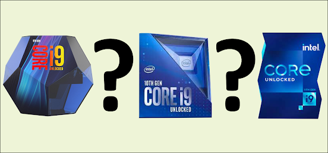

Which high end Intel proccessor is better?

Hello guys, Welcome back to my blog. It's DDS. Today I am back with a new topic. It is a very trending topic these days, as Intel has launched the 11th Generation Rocket Lake processors. Intel Core i9 Processors are one of the best processors available in the market. Everyone had expected a better performance with Core i9 11900k. In this blog, I am going to advise you guys to choose the right Core i9 processor. Let's get started.

Core i9 11900k
Let's talk about the latest processor from Intel. It is non-other than the Core i9 11900k. It comes with 8 Cores & 16 Threads. It is a pretty decent processor in the Rocket Lake series. Moreover, it is one of the best. It has a base clock frequency of 3.50GHz and a Turbo Boost speed of 5.30GHz. So, let's talk about the graphics. It comes with Intel UHD Graphics 750. It is pretty enough for most of the software but if you are a gamer or you have to do video rendering and other jobs then you should have a good Graphics Card. This processor has all the advanced technologies like Hyperthreading, Virtualization, Thermal Velocity Boost, and many more. To work with this processor, you need a motherboard with a socket LGA 1200. The maximum RAM size is up to 128GB. Also, it has a cache of up to 16 m. Overall it is efficient for all the works.

Core i9 10900k
It is also a powerful processor with a Base Clock Frequency of 3.70 GHz & a Turbo Boost frequency of 5.30 GHz. In comparison to both Core i9 9900k and Core i9 11900k, Core i9 10900k has 2 more Cores and 4 more Threads. According, to the generation, the series differs. Core i910900k comes from the Comet Lake series. It has a maximum RAM size of 128GB. It comes with Intel UHD Graphics 630. Still, it is very high-end and one of the best processors for gaming. As it comes with 10 Cores and 20 Threads, it has better multicore performance. I would highly recommend you to choose this processor. Along with Core i9 11900k, it also works in socket LGA 1200. That's all about the Core i9 10900k.

Core i9 9900k
Let's talk about the Core i9 9900k. This processor looks very fascinating by its design. Even when the Core i9 10900k has released this processor used to get more attention due to its box design. Now let's talk about the clock speed. Its base clock frequency is 3.60GHz and the turbo boost frequency is 5.00 GHz. This processor comes from the Coffee Lake processor series. As core i9 10900k, this processor also comes with Intel UHD Graphics 630. Surprisingly, this processor works with the socket LGA 1151. It comes with 8 Cores and 16 Threads. The maximum RAM size is up to 128GB (DDR4 with a frequency of 2666 MHz). All the Core i9 processors support all the advanced technologies available. That's all for the core i9 9900k.
Have a rocking week!
Instagram - CLICK HERE
YouTube - CLICK HERE
Thank you for reading!!